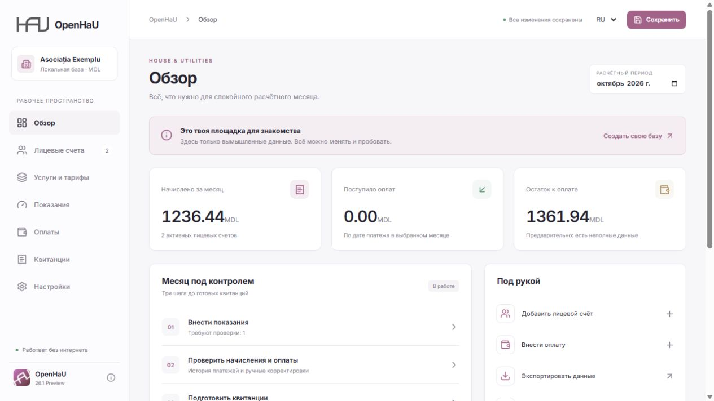
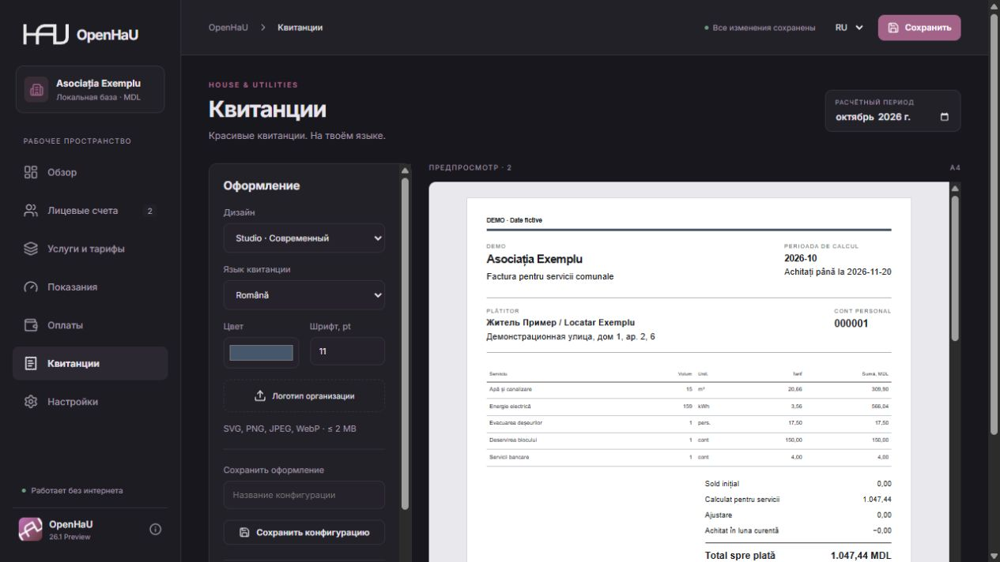

Every account has its place.
Manage payers, multiple apartments, area, residents and opening balances. Choose which services apply to each account.
Set up your organisation →OLDSCHOOL NETWORK / DESKTOP SOFTWARE
House & Utilities. An offline workspace for a small housing association — from meter readings and payments to a receipt that feels like your own.
Windows x64 · Mac Intel + Apple Silicon · Russian / Romanian
A first preview, not a certified accounting system. Start with fictional data and verify calculations alongside your existing records.
No ON Account required.
THE WORKSPACE
Actual 26.1 interface.
Fictional demonstration data.

BUILT AROUND THE MONTH
The essentials of a local billing workflow,
without a mandatory cloud account.
Manage payers, multiple apartments, area, residents and opening balances. Choose which services apply to each account.
Set up your organisation →Metered, per-person, area, fixed and manual quantities. Dated tariffs, decimal arithmetic, payments and adjustments.
Work through a month →A local SQLite database, backups before saving an existing database, and a full editable JSON export. CSV is available for monthly summaries.
Save and move your data →THE FINAL DETAIL
Studio, Compact or Classic. Choose Russian, Romanian or both, adjust the colour and type size, and add your organisation’s logo.
Vector SVG or PNG, JPEG and WebP images. Save named configurations and print through the system dialog, or export a standalone HTML file.
Explore receipts →Check a sample on paper before a print run, especially in black and white.

START HERE
Small downloads. System webview. No bundled development tools required.
Intel and Apple Silicon. Target: Monterey 12.6+. Drag OpenHaU to Applications.
Download DMG ↓Unsigned, not notarized. First launch on Monterey was reported successful after removing the Telegram quarantine flag. Other Mac workflows still require testing.
Mac first-launch help →Uses Microsoft Edge WebView2. The installer can download the runtime if it is missing.
Download installer ↓Prefer no installation? A standalone EXE is also available. It still requires WebView2 and uses the app data directory.
Standalone EXE · 7.4 MiB ↗Release notes & SHA-256 checksums ↗·Installation & updates →
DOCUMENTATION, NOT GUESSWORK
The project wiki explains real controls, data formats, limitations and recovery steps. The user guide is available in English.